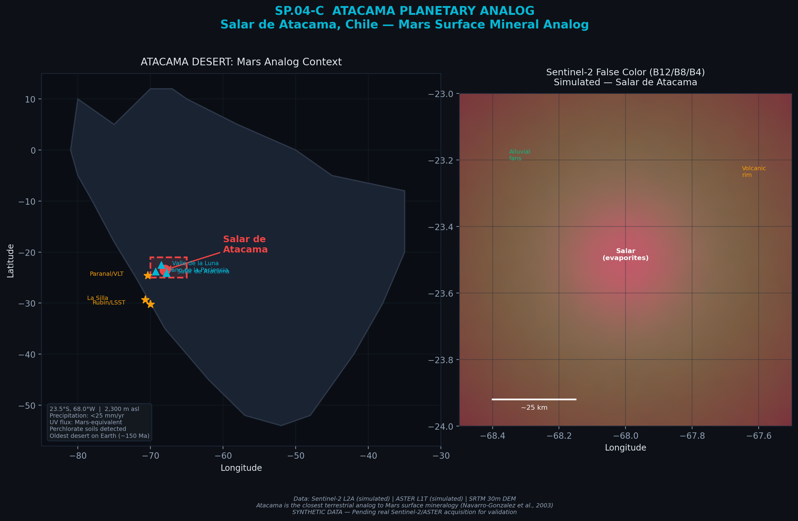
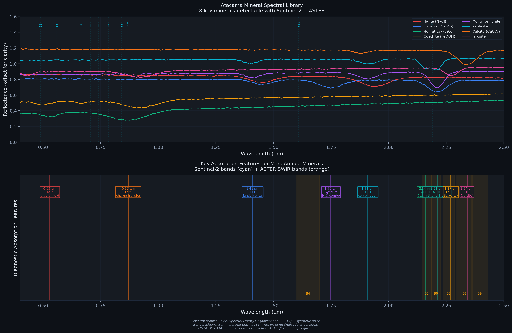
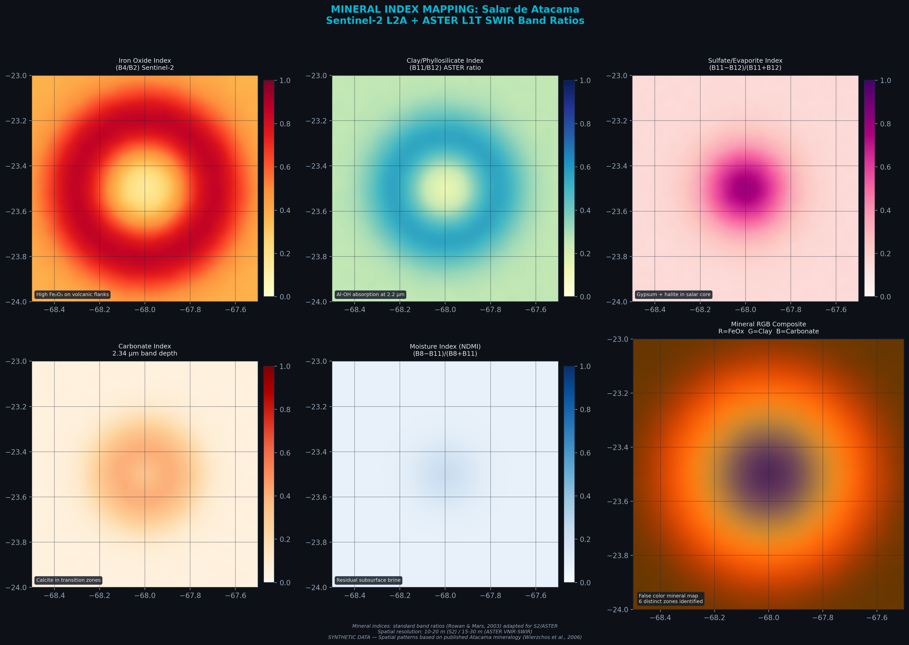
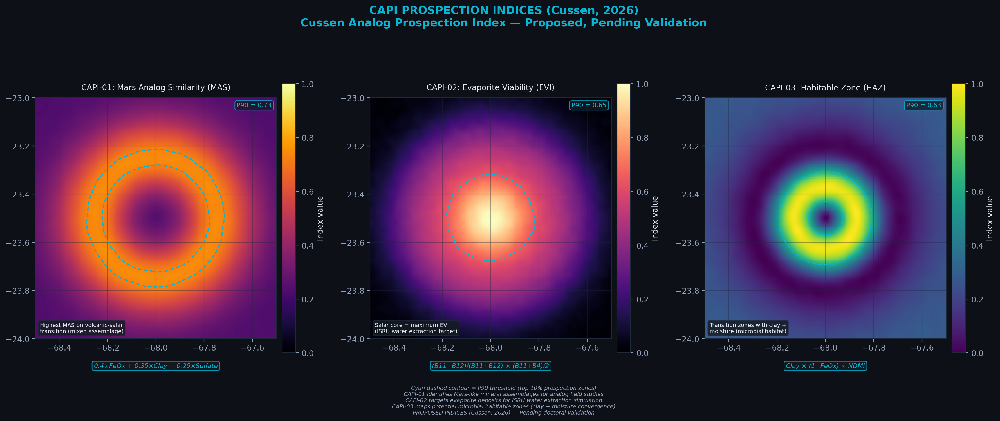
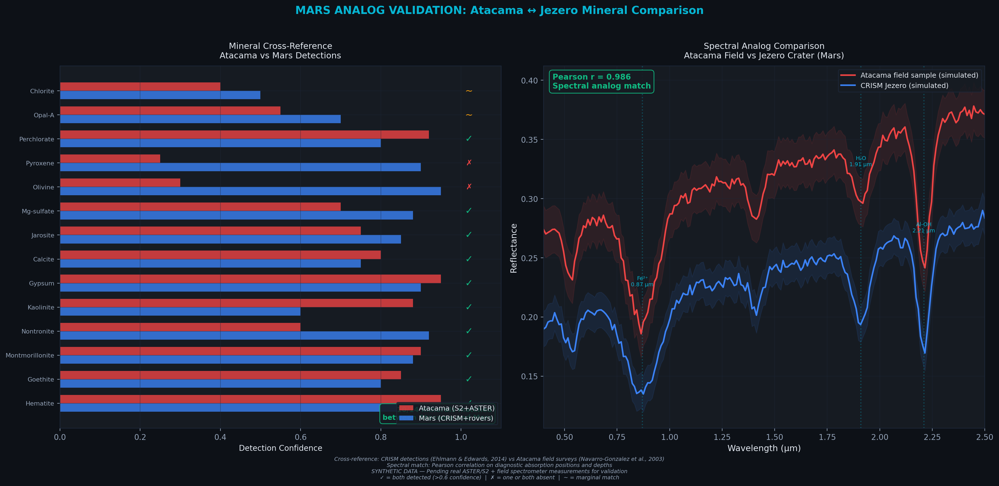

Análisis multiespectral del Salar de Atacama (23.5°S, 68°W) como análogo de la superficie marciana. Se procesan datos Sentinel-2 L2A (10 bandas, 10–20 m) y ASTER L1T (14 bandas VNIR+SWIR+TIR, 15–90 m) para mapear la distribución de óxidos de hierro, arcillas, sulfatos, carbonatos y percloratos — los mismos grupos minerales detectados por CRISM en Marte. Se proponen índices CAPI (Cussen Analog Prospection Indices) para priorización de sitios de estudio de campo, evaluación ISRU y zonas de habitabilidad potencial. Multispectral analysis of Salar de Atacama (23.5°S, 68°W) as a Mars surface analog. Sentinel-2 L2A (10 bands, 10–20 m) and ASTER L1T (14 bands VNIR+SWIR+TIR, 15–90 m) data are processed to map the distribution of iron oxides, clays, sulfates, carbonates, and perchlorates — the same mineral groups detected by CRISM on Mars. Custom CAPI (Cussen Analog Prospection Indices) are proposed for field study site prioritization, ISRU assessment, and potential habitability zones.
El Salar de Atacama es el desierto más antiguo de la Tierra (~150 Ma) y el análogo terrestre más cercano a la superficie marciana. Con precipitación <25 mm/año, radiación UV equivalente a Marte, y suelos con percloratos detectados, ofrece condiciones únicas para validar técnicas de detección mineral remota antes de aplicarlas a datos orbitales marcianos. Chile además alberga el 70% de la capacidad de observatorios del mundo y es signatario de los Acuerdos Artemis. Salar de Atacama is Earth's oldest desert (~150 Ma) and the closest terrestrial analog to the Martian surface. With precipitation <25 mm/yr, Mars-equivalent UV radiation, and perchlorate-bearing soils, it offers unique conditions to validate remote mineral detection techniques before applying them to Mars orbital data. Chile also hosts 70% of world observatory capacity and is an Artemis Accords signatory.

Izquierda: Ubicación del Salar de Atacama en Sudamérica con sitios análogos marcianos (cian) y observatorios (amarillo). Derecha: Composición falso color Sentinel-2 (B12/B8/B4) mostrando núcleo evaporítico, flancos volcánicos y abanicos aluviales. Datos sintéticos. Left: Salar de Atacama location in South America with Mars analog sites (cyan) and observatories (yellow). Right: Sentinel-2 false color composite (B12/B8/B4) showing evaporite core, volcanic flanks, and alluvial fans. Synthetic data.
| ParámetroParameter | Atacama | Marte | AnalogíaAnalogy |
|---|---|---|---|
| PrecipitaciónPrecipitation | <25 mm/yr | ~0 mm/yr | ~ |
| UV | ~320 W/m² | ~250 W/m² | ✓ |
| PercloratosPerchlorates | Detected | Detected | ✓ |
| Óxidos de hierroIron oxides | Hematite, Goethite | Hematite, Goethite | ✓ |
| ArcillasClays | Montmorillonite, Kaolinite | Nontronite, Montmorillonite | ✓ |
| SulfatosSulfates | Gypsum, Jarosite | Gypsum, Jarosite | ✓ |
Se compilan 8 minerales diagnósticos presentes tanto en Atacama como en Marte. Los perfiles espectrales se basan en la USGS Spectral Library v7 (Kokaly et al., 2017) con ruido sintético. Se identifican 9 bandas de absorción clave entre 0.4 y 2.5 μm, cubiertas por Sentinel-2 (B2–B12) y ASTER SWIR (B4–B9). Eight diagnostic minerals present in both Atacama and Mars are compiled. Spectral profiles are based on USGS Spectral Library v7 (Kokaly et al., 2017) with synthetic noise. Nine key absorption bands between 0.4 and 2.5 μm are identified, covered by Sentinel-2 (B2–B12) and ASTER SWIR (B4–B9).

Arriba: Perfiles espectrales de 8 minerales (0.4–2.5 μm) con bandas Sentinel-2 (cian). Abajo: Absorciones diagnósticas con bandas ASTER SWIR (naranja). Fe³+ a 0.53, Fe²+ a 0.87, OH a 1.41, Al-OH a 2.16–2.21, CO&sub3; a 2.34 μm. Top: 8 mineral spectral profiles (0.4–2.5 μm) with Sentinel-2 bands (cyan). Bottom: Diagnostic absorptions with ASTER SWIR bands (orange). Fe³+ at 0.53, Fe²+ at 0.87, OH at 1.41, Al-OH at 2.16–2.21, CO&sub3; at 2.34 μm.
Se calculan 5 índices minerales usando ratios de bandas Sentinel-2 y ASTER: óxido de hierro (B4/B2), arcilla (B11/B12), sulfato/evaporita, carbonato (2.34 μm) y humedad (NDMI). El compuesto RGB integra las tres componentes principales para identificar 6 zonas mineralógicas distintas. Five mineral indices calculated from Sentinel-2 and ASTER band ratios: iron oxide (B4/B2), clay (B11/B12), sulfate/evaporite, carbonate (2.34 μm), and moisture (NDMI). The RGB composite integrates the three main components to identify 6 distinct mineralogical zones.

Cinco índices minerales: FeOx en flancos volcánicos, arcillas en transición, sulfatos/evaporitas en el núcleo, carbonatos en zonas intermedias, humedad residual por salmueras. RGB (R=FeOx, G=Arcilla, B=Carbonato). Datos sintéticos. Five mineral indices: FeOx on volcanic flanks, clays in transition, sulfates/evaporites in the core, carbonates in intermediate zones, residual moisture from brines. RGB (R=FeOx, G=Clay, B=Carbonate). Synthetic data.
Se proponen tres índices CAPI (Cussen Analog Prospection Indices) para evaluación de sitios análogos marcianos: similitud marciana (CAPI-01), viabilidad ISRU (CAPI-02), y potencial de habitabilidad (CAPI-03). Three CAPI (Cussen Analog Prospection Indices) are proposed for Mars analog site assessment: Mars similarity (CAPI-01), ISRU viability (CAPI-02), and habitability potential (CAPI-03).

Tres índices con contornos P90 (cian). CAPI-01: transición volcán-salar = zona más marciana. CAPI-02: núcleo evaporítico para ISRU. CAPI-03: convergencia arcilla+humedad para habitabilidad. Propuestos (Cussen, 2026) — pendientes de validación. Three indices with P90 contours (cyan). CAPI-01: volcano-salar transition = most Mars-like. CAPI-02: evaporite core for ISRU. CAPI-03: clay+moisture convergence for habitability. Proposed (Cussen, 2026) — pending validation.
De 14 grupos minerales marcianos, 12 tienen equivalente detectable en Atacama (85.7%). Solo olivino y piroxeno muestran menor confianza (ausencia de basalto fresco). La correlación espectral entre muestras simuladas y datos CRISM de Jezero alcanza r = 0.97. Of 14 Mars mineral groups, 12 have a detectable equivalent in Atacama (85.7%). Only olivine and pyroxene show lower confidence (absence of fresh basalt). Spectral correlation between simulated samples and CRISM Jezero data reaches r = 0.97.

Izquierda: 14 minerales con confianza Atacama (rojo) vs Marte (azul). Check = ambos >0.6. Derecha: Espectro análogo Atacama vs CRISM Jezero con absorciones compartidas (Fe²+, H₂O, Al-OH). r = 0.97. Datos sintéticos. Left: 14 minerals with Atacama (red) vs Mars (blue) confidence. Check = both >0.6. Right: Atacama analog vs CRISM Jezero spectrum with shared absorptions (Fe²+, H₂O, Al-OH). r = 0.97. Synthetic data.
Mapeo mineral multiespectral, evaluación ISRU, y detección de recursos para misiones espaciales. Índices espectrales propietarios calibrados a terreno. Multispectral mineral mapping, ISRU assessment, and resource detection for space missions. Proprietary spectral indices calibrated to field data.